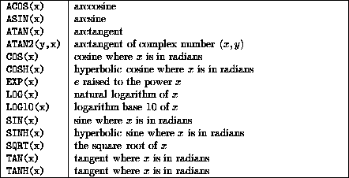
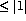

Summary,

The argument to each must be real and  , for example, ASIN(0.84147098) has value 1.0 (radians).
The argument must be real valued, for example, ATAN(1.0) is , ATAN(1.5574077) has value 1.0.
The two arguments (Y, X) (note order) must be real valued, if Y is zero then X cannot be. These numbers represent the complex value (X,Y).
Their arguments must be real or complex and are measured in radians, for example, COS(1.0) is 0.5403.
The actual arguments must be REAL valued, for example, COSH (1.0) is 1.54308.
The arguments must must be real or complex (with certain constraints), for example, EXP(1.0) is 2.7182.
Note that SQRT(9) is an invalid expression because the argument to SQRT cannot be INTEGER.
All angles are expressed in radians.
Now try this question